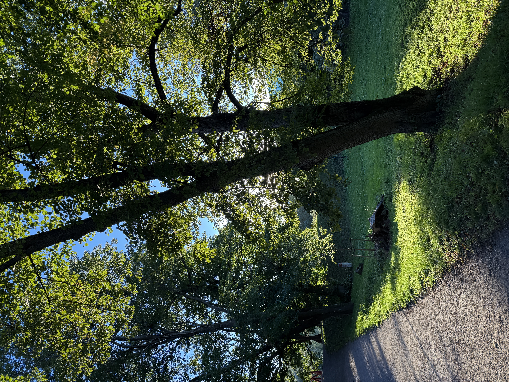
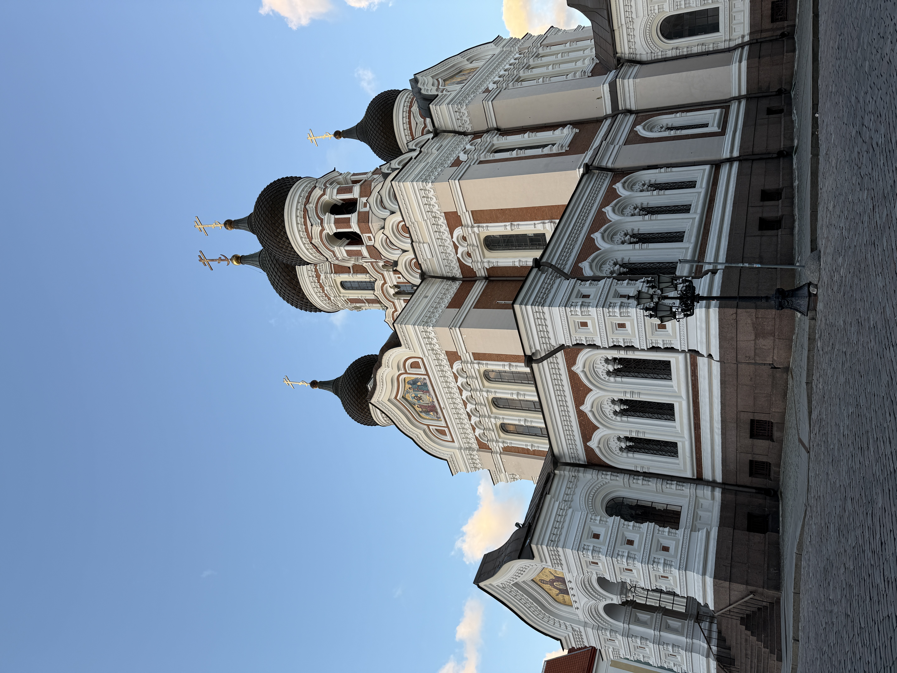
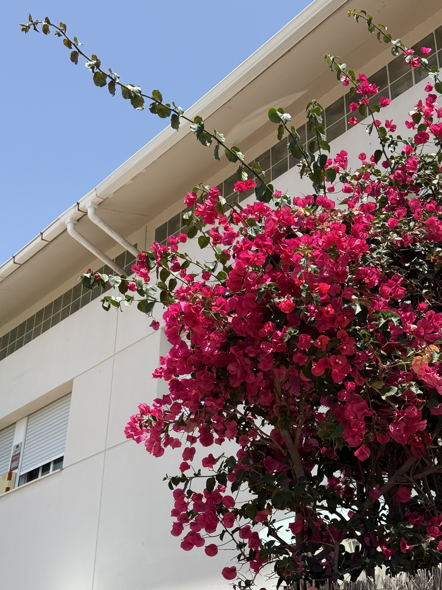

Yoga & Fitness
A 200-hour certified Ashtanga Vinyasa yoga teacher. Staying active and healthy is a daily priority.
Personal website
International HPC Training Program Officer at Barcelona Supercomputing Center. Blending academic research in autonomous networks with continuous learning, yoga, dance, handcrafts, and a deep devotion to family, friends, and diversity in STEM.
International HPC Training Program Officer at BSC (Feb 2025–Present) & former Postdoctoral Researcher at UPC (2022–Jan 2025).
Select a subsection below to learn more about my background and roles.
I am an International HPC Training Program Officer at the Barcelona Supercomputing Center (BSC), where I focus on Training Coordination and Collaboration across National Competence Centres for the CASTIEL project.
I completed my PhD in Computer Architecture at UPC in 2022 with a thesis on “Autonomous and reliable operation of multilayer optical networks,” followed by over two years as a Postdoctoral Researcher at UPC (2022 – Jan 2025).
Beyond research, I am deeply involved in advocating for women in optical networking, co-organizing the annual Women in Telecommunication and Optical Networks (WeInTel) workshop at ICTON since 2023.
Life outside work revolves around movement, arts, and connection. I regularly practice yoga, dance, work on handcrafts, paint, and cherish time with family and friends.
About me
I am an International HPC Training Program Officer at the Barcelona Supercomputing Center (BSC), where I focus on Training Coordination and Collaboration across National Competence Centres for the CASTIEL project.
I completed my PhD in Computer Architecture at UPC in 2022 with a thesis on “Autonomous and reliable operation of multilayer optical networks,” followed by over two years as a Postdoctoral Researcher at UPC (2022 – Jan 2025).
Beyond research, I am deeply involved in advocating for women in optical networking, co-organizing the annual Women in Telecommunication and Optical Networks (WeInTel) workshop at ICTON since 2023.
Life outside work revolves around movement, arts, and connection. I regularly practice yoga, dance, work on handcrafts, paint, and cherish time with family and friends.
Select a subsection below to explore my passions and interests.
A 200-hour certified Ashtanga Vinyasa yoga teacher. Staying active and healthy is a daily priority.
Dancing as a passion for joy, movement, rhythm, and self-expression.
I love making handcrafts, DIY projects, and creating tangible handmade items.
My family and friends are priceless to me. Spending quality time with loved ones is essential.
Always seeking new skills, hobbies, routines, and life experiences with curiosity.
Painting, photography, nature walks, animals, and blue skies keep me inspired.
Communicating across cultures and communities.
Mother Tongue
Official Language (Native Fluency)
Full Professional Proficiency
Fluent
Conversational & Professional
Explore my academic presence and professional links across platforms.
Select a subsection below to explore my research domains and published works.
Coordinating international HPC training programs and fostering community growth across National Competence Centres.
Researching multi-agent systems and real-time autonomous routing in optical network architectures.
Co-organizer of the Women in Telecommunication and Optical Networks (WeInTel) workshop series at ICTON:
IEEE Transactions on Network and Service Management, 2026.
IEEE Transactions on Network and Service Management, 2025.
Journal of Optical Communications and Networking, 2025.
Select a category folder below or pick a subcategory directly from the top bar. Click any micro-thumbnail (~32px) to view full screen.

Click to view subcategories and micro-views.

Click to view subcategories and micro-views.

Click to view subcategories and micro-views.
Key academic and professional milestones.
Barcelona Supercomputing Center (BSC) — Leading international training initiatives and collaboration across NCCs.
International Conference on Transparent Optical Networks (ICTON) — Highlighting diverse voices in optical networks.
Universitat Politècnica de Catalunya (UPC) — Advanced research in autonomous networks and control.
Awarded by UPC for outstanding PhD research achievements.
Universitat Politècnica de Catalunya (UPC) — Graduation Year: 2022.